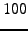
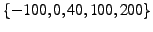

A database can be created directly from a data matrix, or indirectly by loading a dataset. For the latter, first a dataset object must be created that point to the data sources. There are different dataset classes that allow using different data sources. For instance, physiology and simulation data require different operations. In physiology data, one can record information about the treatments and other conditions, whereas in simulations one can keep track of changing parameters.
Once the dataset object is obtained, the database object can be created with
>> warning off backtrace
>> warning off calcInitVm:info
Physiology data can be obtained from multiple sources.
The preferred way to load physiology traces is to first create a text file where each line specifies traces to load from a single data source (e.g., a PCDX file). The format of this text file is explained in the help of the physiol_cip_traceset_fileset class. The physiology fileset can be created from the text file with a command such as follows:
physiol_cip_traceset_fileset('cell_traces.txt', 1e-4, 1e-3,
struct('profile_class_name',
'getProfileAllSpikes',
'offset_y', -9,
'cip_list',
[-200 -100:20:100 200 300]))
The fileset can then be used to generate the database, as shown above, using its params_tests_db method. The fileset object holds within, a separate physiol_cip_traceset object for each line in the text file.
The cip_list optional parameter must be used with caution.
To determine actual CIP-levels, the current channel of the trace is
analyzed. cip_list entries are used to discretize the noisy
current channel. Current levels will coerce to the nearest entry from
cip_list. In the above example, all current levels below
 pA will be assumed to be pA. The default cip_list
resides in the physiol_cip_traceset/CIPform method.
pA will be assumed to be pA. The default cip_list
resides in the physiol_cip_traceset/CIPform method.
The now obsolete cip_traces Matlab objects have been used to hold some earlier physiological data. Each object holds a set of traces with varying CIP levels applied to the cell. The following command creates a dataset object from a cell array ct_list of cip_traces objects by choosing only the traces with  pA and pA CIP levels
cip_traceset_dataset(ct_list, [100, -100], 1e-3,
'dataset gpd 0411-21',
struct('offsetPotential', -9)
First a dataset or a fileset must be created. An example to load GENESIS .bin files would be
params_cip_trace_fileset('/home/cengiz/data/*.bin',
1e-4, 1e-3,
20001, 10000,
'sim dataset gpsc0501',
struct('trace_time_start', 10001,
'type', 'sim',
'scale_y', 1e3))
Sometimes not all data files in a simulation set would have the same length, or CIP start time. The brute-force simulation set is such an example, where the spontaneous trace and different CIP level traces are in different files. I have a special superclass that contains multiple fileset objects to automatically handle this kind of data. It resides not in the general distribution directory, but in my personal directory /djlab/shared/matlab/classes/cengiz. This class is an example of how to create composite fileset objects. An instance of this class can be created with:
multi_fileset_gpsim_cns2005('.../data', '.../paramRanges.txt',
'.../all_0.par', 'sim db gpsc0502')
Once a database with more-than-sufficient number of measures is available, subsets of this database can be extracted easily for other tasks. New databases can be formed by filtering rows, columns or pages of an existing database. For choosing any of these dimensions, the user can specify an array of indices, or a logical array. For instance,
For measures, columns can also be specified as a single string value, or a cell array of strings, as in
Rows of the database signify neurons or simulation runs. Therefore it is important to find subset of neurons that match a certain criteria. This can be done specifying a list of rows that is the result of a logical operation. A logical operation finds rows that satisfy constraints on a single parameter or measure of a database. For instance,
db1(:, 'IniSpontSpikeRate') <= 20, :);
Complex queries can be constructed using results of queries in nested fashion. The following example shows an example of finding all neurons that match any of the neurons in another database and then find the ones that match certain criteria:
>> displayRows(sub_phys_es2(sub_phys_es2(:, 'Apamin') > 0, 'NeuronId'))
First, all rows where the desired measure value is NaN should be eliminated:
dball(~isnan(dball(:, 'PulseSpikeAmpDecayTau')), :)
Then, one can sort the new database using:
'PulseSpikeAmpDecayTau')
ans =
'NaF' [ 1000] [ 250] [ 250]
'NaP' [ 0.5000] [ 0.5000] [ 2.5000]
'Kv3' [ 60] [ 15] [ 30]
'Kv2' [ 9] [ 3] [ 3]
'Kv4f' [ 5] [ 1] [ 25]
'KCNQ' [ 0.1000] [ 0.0100] [ 0.1000]
'SK' [ 8.5000] [ 34] [ 8.5000]
'CaHVA' [ 10] [ 0.1000] [ 10]
'HCN' [ 30] [ 0.3000] [ 30]
'pAcip' [ 100] [ 100] [ 100]
'IniSpontISICV' [3.9448e-04] [ 0.0051] [ 0.0452]
'IniSpontPotAvg' [ -64.9161] [-52.6859] [-41.5876]
'IniSpontSpikeRate' [ 14.0014] [ 18.0018] [ 81.0081]
'PulseISICV' [ 0.0226] [ 0] [ 0.0366]
'PulseIni100msISICV' [ 0.0541] [ 0] [ 0.0814]
[1x27 char] [ 28.8953] [ 0] [ 88.9086]
[1x27 char] [ 26.6785] [ 0] [ 86.7052]
[1x22 char] [ 30] [ 20] [ 100]
[1x25 char] [ 29.4118] [166.6667] [ 96.0512]
'PulsePotAvg' [ -61.0044] [-32.7775] [-34.1518]
'PulsePotMin' [ NaN] [ NaN] [ NaN]
'PulsePotSag' [ NaN] [ NaN] [ NaN]
'PulseSFA' [ 1.1254] [ NaN] [ 1.3571]
'PulseSpikeAmpDecayDelta'[ 4.2764] [ 9.2041] [ 17.8389]
'PulseSpikeAmpDecayTau' [ 0.2000] [ 0.2000] [ 0.3000]
'PulseSpikeRate' [ 28.0028] [ 2.0002] [ 89.0089]
...
ans =
'NaF' [ 250] [ 250] [ 1000]
'NaP' [ 2.5000] [ 2.5000] [ 2.5000]
'Kv3' [ 15] [ 15] [ 60]
'Kv2' [ 3] [ 3] [ 9]
'Kv4f' [ 5] [ 5] [ 25]
'KCNQ' [ 0.1000] [ 0.1000] [ 0.0100]
'SK' [ 8.5000] [ 8.5000] [ 17]
'CaHVA' [ 10] [ 10] [ 10]
'HCN' [ 30] [ 3] [ 30]
'pAcip' [ -100] [ -100] [ 100]
'IniSpontISICV' [ 0.0027] [ 0.0027] [9.1376e-04]
'IniSpontPotAvg' [-28.5685] [-28.5687] [ -67.7567]
'IniSpontSpikeRate' [ 69.0069] [ 69.0069] [ 14.0014]
'PulseISICV' [ 0.0046] [ 0.0046] [ 0.0091]
'PulseIni100msISICV' [ 0.0080] [ 0.0080] [ 0]
[1x27 char] [ 71.1269] [ 71.1269] [ 24.4499]
[1x27 char] [ 71.1427] [ 71.1427] [ 26.6785]
[1x22 char] [ 80] [ 80] [ 20]
[1x25 char] [ 70.6357] [ 70.6357] [ 25.4453]
'PulsePotAvg' [-30.1705] [-30.1718] [ -65.2721]
'PulsePotMin' [ NaN] [ NaN] [ NaN]
'PulsePotSag' [ NaN] [ NaN] [ NaN]
'PulseSFA' [ 0.9792] [ 0.9792] [ 1.0407]
'PulseSpikeAmpDecayDelta'[ -1.2791] [ -1.2868] [ 1.2201]
'PulseSpikeAmpDecayTau' [999.6000] [999.6000] [ 1000]
'PulseSpikeRate' [ 72.0072] [ 72.0072] [ 25.0025]
...
Mostly, raw physiology databases are subject to redundancies and unwanted recordings. We usually apply the following steps before we start analyzing a raw physiology database. Similar steps may be employed for simulation databases, too.
Recordings with high bias current are undesirable. We commonly filter-out high bias currents with:
phys_dball(phys_dball(:, 'pAbias') > -30 &
phys_dball(:, 'pAbias') < 30, :)
To get a profile for a neuron, usually both hyperpolarizing and depolarizing CIP-levels need to be included. Moreover, to capture the spiking frequency vs. current response of the neuron, multiple depolarizing CIP-level information may need to be included.
There are two counterparts to selecting which CIP-levels to include in a DB. First, one can select what CIP-levels are available in the raw data and what discretization levels should be used while loading the database. This is done with the cip_list optional parameter described in Section 5.1.1. GP recordings prior to mid-2005 have current channel data which are too noisy to be quantized to levels of 10 pA. Instead, at least a step size of 20 pA needs to be used. Later recordings have both better recordings, and feature 20 pA steps in the experimental protocol anyway.
Second, after the database is loaded, one can filter-out unwanted CIP-level traces:
phys_dball_big(phys_dball_big(:, 'pAcip') == -100 |
phys_dball_big(:, 'pAcip') == 0 |
phys_dball_big(:, 'pAcip') == 50 |
phys_dball_big(:, 'pAcip') == 100 |
phys_dball_big(:, 'pAcip') == 200, :)
phys_dball_big(phys_dball_big(:, 'pAcip') == [-100; 0; 50; 100; 200])
Some measures can be deduced from measures collected from raw data. These do not need to be calculated at time of loading the raw data, but rather can be added to the database later. Some measures must be added later because they may be composed of measurements from multiple traces or averages. Here is an example for adding a new measure:
addColumn(phys_db_limitedcip, 'PulsePotSagDivMin',
phys_db_limitedcip(:, 'PulsePotSag').data ./
phys_db_limitedcip(:, 'PulsePotMin').data)
In making a one-row-per-CIP-level database, it is essential to include all available information from the raw database. Especially in physiology datasets, there may be multiple traces of a neuron where the same CIP-level and the same pharmacological conditions were applied. These rows can be averaged to obtain a single row for each CIP-level of a neuron.
Before doing this, the parameters of the raw database should only include parameters that uniquely distinguish neurons. The averaging operation tries to find each distinct set of parameters and then averages all rows that has this combination. For example, the NeuronId and pAcip parameters need to be distinct. However, the pAbias parameter does not need to be distinct for each neuron. The non-unique parameters need to be filtered-out before the averaging process. The following shows all the parameters of a raw physiology database:
params_tests_db, tracesets from .../cip_traces_all_axoclamp.txt
ans =
num_params: 16
props: [0x0 struct]
tests_db: [1x1 tests_db]
Optional properties of params_tests_db:
ans =
0x0 struct array with no fields.
tests_db, tracesets from .../cip_traces_all_axoclamp.txt
1527 rows in database with 182 columns, and 1 pages.
Column names:
[ 1] 'pulseOn'
[ 2] 'pulseOff'
[ 3] 'traceEnd'
[ 4] 'pAcip'
[ 5] 'pAbias'
[ 6] 'Cadmium'
[ 7] 'PicroTx'
[ 8] 'Apamin'
[ 9] 'Glycine'
[ 10] 'KynAcid'
[ 11] 'TTX'
[ 12] 'XE991'
[ 13] 'drug_4AP'
[ 14] 'EBIO'
[ 15] 'NeuronId'
[ 16] 'TracesetIndex'
...
params_tests_db, averaged tracesets from .../cip_traces_all.txt
ans =
num_params: 13
props: [0x0 struct]
tests_db: [1x1 tests_db]
Optional properties of params_tests_db:
ans =
0x0 struct array with no fields.
tests_db, averaged tracesets from .../cip_traces_all.txt
690 rows in database with 158 columns, and 1 pages.
Column names:
[ 1] 'pAcip'
[ 2] 'Cadmium'
[ 3] 'PicroTx'
[ 4] 'Apamin'
[ 5] 'Glycine'
[ 6] 'KynAcid'
[ 7] 'TTX'
[ 8] 'XE991'
[ 9] 'drug_4AP'
[ 10] 'EBIO'
[ 11] 'NeuronId'
[ 12] 'NumDuplicates'
[ 13] 'RowIndex'
[ 14] 'IniSpontISICV'
...
A simple example for making a new database out of multiple rows in an existing database is combining multiple traces from the same neuron with different current pulse injection (CIP) levels. The initial database contains a row for each CIP level with redundant information, such as spontaneous period measurements.
Measures of same cell obtained with multiple CIP-levels can be merged to make a single row. Note that, different pharmacological conditions applied to one cell must be kept in a different rows. The following command selects measures from each of the  CIP levels to be included in the merged database:
mergeMultipleCIPsInOne(phys_mean_db(:, [1:13 16:180]),
{'_H100pA', 13 + [5:14 19:24 (119 + spike_tests) 165],
'_0pA', 13 + [1:4 (27 + spike_tests)],
'_D40pA', 13 + [5:11 19:24 (73 + spike_tests) 165],
'_D100pA', 13 + [5:11 14:16 19:24 (73 + spike_tests)
(119 + spike_tests) 165],
'_D200pA', 13 + [5:11 19:24 (73 + spike_tests) 165]},
'RowIndex_D200pA')
ans =
num_params: 12
tests_db: [1x1 tests_db]
tests_db, averaged tracesets from .../cip_traces_all_axoclamp.txt mult CIP
179 rows in database with 258 columns, and 1 pages.
Column names:
[ 1] 'Cadmium'
[ 2] 'PicroTx'
[ 3] 'Apamin'
[ 4] 'Glycine'
[ 5] 'KynAcid'
[ 6] 'TTX'
[ 7] 'XE991'
[ 8] 'drug_4AP'
[ 9] 'EBIO'
[ 10] 'Gabazine'
[ 11] 'NeuronId'
[ 12] 'TracesetIndex'
[ 13] 'PulseISICV_H100pA'
[ 14] 'PulseIni100msISICV_H100pA'
[ 15] 'PulseIni100msRest1SpikeRate_H100pA'
[ 16] 'PulseIni100msRest2SpikeRate_H100pA'
[ 17] 'PulseIni100msSpikeRate_H100pA'
[ 18] 'PulseIni100msSpikeRateISI_H100pA'
...
[255] 'PulseSpikeRiseTimeMean_D200pA'
[256] 'PulseSpikeRiseTimeMode_D200pA'
[257] 'PulseSpikeRiseTimeSTD_D200pA'
[258] 'PulseSpontAmpRatio_D200pA'
The following statement uses the params_tests_db/getDualCIPdb method to merge rows of depolarizing and hyperpolarizing CIP-levels:
'', 'Hyp100pA')
dball
params_tests_db, sim dataset gpsc0501
ans =
num_params: 10
props: [0x0 struct]
tests_db: [1x1 tests_db]
Optional properties of params_tests_db:
ans =
0x0 struct array with no fields.
tests_db, sim dataset gpsc0501
39366 rows in database with 62 columns, and 1 pages.
Column names:
[ 1] 'NaF'
[ 2] 'NaP'
[ 3] 'Kv3'
[ 4] 'Kv2'
[ 5] 'Kv4f'
[ 6] 'KCNQ'
[ 7] 'SK'
[ 8] 'CaHVA'
[ 9] 'HCN'
[10] 'pAcip'
[11] 'IniSpontISICV'
[12] 'IniSpontPotAvg'
[13] 'IniSpontSpikeRate'
[14] 'PulseISICV'
[15] 'PulseIni100msISICV'
[16] 'PulseIni100msRest1SpikeRate'
[17] 'PulseIni100msRest2SpikeRate'
[18] 'PulseIni100msSpikeRate'
[19] 'PulseIni100msSpikeRateISI'
[20] 'PulsePotAvg'
[21] 'PulsePotMin'
[22] 'PulsePotSag'
[23] 'PulseSFA'
[24] 'PulseSpikeAmpDecayDelta'
[25] 'PulseSpikeAmpDecayTau'
[26] 'PulseSpikeRate'
[27] 'PulseSpikeRateISI'
[28] 'RecIniSpontPotRatio'
[29] 'RecIniSpontRateRatio'
[30] 'RecSpont1SpikeRate'
[31] 'RecSpont2SpikeRate'
[32] 'RecSpontISICV'
[33] 'RecSpontPotAvg'
[34] 'RecSpontSpikeRate'
[35] 'SpontAmplitude'
[36] 'SpontBaseWidth'
[37] 'SpontDAHPMag'
[38] 'SpontFallTime'
[39] 'SpontHalfVm'
[40] 'SpontHalfWidth'
[41] 'SpontInitTime'
[42] 'SpontInitVm'
[43] 'SpontMaxAHP'
[44] 'SpontMinTime'
[45] 'SpontMinVm'
[46] 'SpontPeakVm'
[47] 'SpontRiseTime'
[48] 'PulseAmplitude'
[49] 'PulseBaseWidth'
[50] 'PulseDAHPMag'
[51] 'PulseFallTime'
[52] 'PulseHalfVm'
[53] 'PulseHalfWidth'
[54] 'PulseInitTime'
[55] 'PulseInitVm'
[56] 'PulseMaxAHP'
[57] 'PulseMinTime'
[58] 'PulseMinVm'
[59] 'PulsePeakVm'
[60] 'PulseRiseTime'
[61] 'PulseSpontAmpRatio'
[62] 'ItemIndex'
Optional properties of tests_db:
ans =
0x0 struct array with no fields.
sdball
params_tests_db, sim dataset gpsc0501 dual cip
ans =
num_params: 9
props: [0x0 struct]
tests_db: [1x1 tests_db]
Optional properties of params_tests_db:
ans =
0x0 struct array with no fields.
tests_db, sim dataset gpsc0501 dual cip
19683 rows in database with 50 columns, and 1 pages.
Column names:
[ 1] 'NaF'
[ 2] 'NaP'
[ 3] 'Kv3'
[ 4] 'Kv2'
[ 5] 'Kv4f'
[ 6] 'KCNQ'
[ 7] 'SK'
[ 8] 'CaHVA'
[ 9] 'HCN'
[10] 'RecIniSpontPotRatioHyp100pA'
[11] 'RecIniSpontRateRatioHyp100pA'
[12] 'RecSpont1SpikeRateHyp100pA'
[13] 'RecSpont2SpikeRateHyp100pA'
[14] 'RecSpontISICVHyp100pA'
[15] 'RecSpontPotAvgHyp100pA'
[16] 'ItemIndexHyp100pA'
[17] 'IniSpontSpikeRate'
[18] 'PulseIni100msSpikeRate'
[19] 'PulseIni100msSpikeRateISI'
[20] 'PulseIni100msISICV'
[21] 'PulseIni100msRest1SpikeRate'
[22] 'PulseIni100msRest2SpikeRate'
[23] 'RecSpont1SpikeRate'
[24] 'RecSpont2SpikeRate'
[25] 'RecIniSpontRateRatio'
[26] 'IniSpontISICV'
[27] 'PulseISICV'
[28] 'RecSpontISICV'
[29] 'PulseSFA'
[30] 'PulseSpikeAmpDecayTau'
[31] 'PulseSpikeAmpDecayDelta'
[32] 'IniSpontPotAvg'
[33] 'PulsePotAvg'
[34] 'RecSpontPotAvg'
[35] 'RecIniSpontPotRatio'
[36] 'SpontInitVm'
[37] 'SpontAmplitude'
[38] 'SpontMaxAHP'
[39] 'SpontDAHPMag'
[40] 'SpontRiseTime'
[41] 'SpontFallTime'
[42] 'SpontHalfWidth'
[43] 'PulseInitVm'
[44] 'PulseAmplitude'
[45] 'PulseMaxAHP'
[46] 'PulseDAHPMag'
[47] 'PulseRiseTime'
[48] 'PulseFallTime'
[49] 'PulseHalfWidth'
[50] 'ItemIndex'
Optional properties of tests_db:
ans =
0x0 struct array with no fields.
By default, MATLAB prints figures in portrait orientation with a 8x6 aspect ratio, ignoring their size on the screen. The command;
The trace, and its subclasses such as cip_trace, has the plot command overloaded to draw the raw trace in Figure 8:
>> plot(a_ct)
The displayRows method of tests_db can be used to display rows of a database:
ans =
'NaF' [ 250] [ 250] [ 1000]
'NaP' [ 2.5000] [ 2.5000] [ 2.5000]
'Kv3' [ 15] [ 15] [ 60]
'Kv2' [ 3] [ 3] [ 9]
'Kv4f' [ 5] [ 5] [ 25]
'KCNQ' [ 0.1000] [ 0.1000] [ 0.0100]
'SK' [ 8.5000] [ 8.5000] [ 17]
'CaHVA' [ 10] [ 10] [ 10]
'HCN' [ 30] [ 3] [ 30]
'pAcip' [ -100] [ -100] [ 100]
'IniSpontISICV' [ 0.0027] [ 0.0027] [9.1376e-04]
...
displayRows returns a cell array of column names justapoxed to a matrix of values. This cell array is intended for display on the screen and for generating reports. The displayRowsTeX method uses output from displayRows to generate a LATEX table that can be printed or converted to PDF:
displayRowsTeX(a_db(:, rows),
'Selected rows indicating fast spiking neurons',
struct('height', '!'));
>> string2File(tex_string, 'fast_spiking.tex');
An alternative to displayRows is using the tests_db/rows2Struct method:
s =
NaF: 500
NaP: 2
Kv2: 1
Kv3: 10
Kv4f: 40
KCNQ: 2
SK: 4
CaHVA: 0.0300
HCN: 1
trial: 7739
pAcip: 100
IniSpontISICV: NaN
IniSpontPotAvg: NaN
IniSpontSpikeRate: 0
IniSpontSpikeRateISI: 0
PulseISICV: 0.0265
PulseIni100msISICV: 0.0584
PulseIni100msRest1SpikeRate: 40.0089
PulseIni100msRest2SpikeRate: 40.0178
PulseIni100msSpikeRate: 50
PulseIni100msSpikeRateISI: 43.5256
PulsePotAvg: -57.3737
PulsePotMin: NaN
PulsePotSag: NaN
PulseSFA: 1.1698
...
For plotting all measure histograms in a DB, the following method of tests_db creates the horizontal stack plot in Figure 9:
struct('orient', 'x', 'quiet', 1, 'border', [0 0.05 0 0])))
>> plotFigure(mp);
For plotting all parameter histograms in a DB, the following method of params_tests_db creates the horizontal stack plot in Figure 10:
The stats_db object allows keeping statistical information obtained from a database. Statistics are calculated using one of the tests_db converter methods, such as statsAll, statsMeanStd, etc.:
|
[Default visualization for stats_db.]
[Optional plot_bars visualization for stats_db.]
[Comparing multiple stats_dbs with plot_bars.]
[Plotting parameter-measure variation with plotVar.]
|
compareStats(statsAll(mbundle.joined_db(1:1000,
{'IniSpontSpikeRateISI_0pA',
'PulseIni100msSpikeRateISI_D100pA'})),
statsAll(mbundle.joined_db(1001:2000,
{'IniSpontSpikeRateISI_0pA',
'PulseIni100msSpikeRateISI_D100pA'})))));
To plot the variation of a measure with a parameter the plotVar method of stats_db can be used to achieve Figure 11 (d):
struct('quiet', 1, 'PaperPosition', [0 0 3 3])))
>> [pt_hists, p_stats] = paramsTestsHistsStats(p_t3ds)
>> ap = plotVarMatrix(p_stats)
>> plotFigure(ap)
>> sdb2 = sdball(:, [1:9, 36:49])
>> p2_t3ds = invarParams(sdb2)
>> [pt1_hists, p1_stats] = paramsTestsHistsStats(p1_t3ds)
>> [pt2_hists, p2_stats] = paramsTestsHistsStats(p2_t3ds)
>> ap1 = plotVarMatrix(p1_stats)
>> plotFigure(ap1)
>> ap2 = plotVarMatrix(p2_stats)
>> plotFigure(ap2)
See Figure 13 which was created with the following set of commands.
>> plotFigure(plot_absolute([im_p, im_p], [0 0 1 1; 0.5 0.5 0.3 0.3]))
Most commonly a database of physiology neurons need to be compared to a database of a large body of simulation neurons and find best matches. One may need to see the match quality for a number of best matching candidates for each of the physiology neurons. Assuming multiple plots and tables are required to do a fair job of comparing a neuron to a thousands of simulation neurons, it becomes a difficult job to do this manually. An automatic report generation system has been built into the system for this purpose.
Currently a LATEX document is created that needs to be included in either a proper LATEX document, or included in a LYX document.5 The including document should provide the context in which the included part becomes meaningful. The report contains a set of tables and figures with proper captions. The table of contents, list of figures and list of tables facilities of LATEX becomes useful to make the automatically generated document eaisly readable.
The report can be created with the command
fileset, phys_fileset);